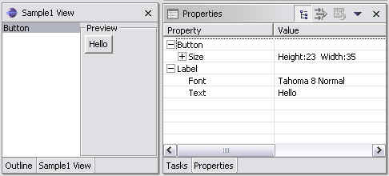
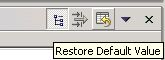

| Eclipse Corner Article |

Summary
The Eclipse workbench provides a properties view which is used to view (and/or edit) properties of a selected item. In this article, you will learn how to use the properties view to dynamically modify the properties of a GUI button.By Dicky Johan, Broadvision, dicky.johan@broadvision.com
May 20, 2003
The Eclipse workbench provides a lot of views, but one of the highly extensible views is the properties view. It provides a way for you, as a plug-in developer, to display the properties of a selected item. The properties view can display read-only information, such as the properties of a file resource. Or it can display information that can be edited, such as the properties of an extension point in a plugin.xml file.
The properties view can display properties for various kinds of items. An item may be a directory resource, a file resource, or an element within a resource (such as an extension in a plugin.xml file). The items may reside in different views within the Eclipse workbench, and the properties view can be triggered from different views or editors to display the properties of a selected item.
In this article, I will show you how to control the different properties of a GUI resource using the properties view. Using a button as a sample GUI resource, I will create a button, a view containing that button, and a list of editable and complex properties. I will show how the button responses to changes of its properties thru the property view.
To run the sample, please unzip propertyviewsample.zip into your eclipse subdirectory. Restart eclipse as necessary.
 Switch to the Resource
perspective, Window>Open Perspective>Resource. Next open the properties
view, Window>Show View>Other... and select
Switch to the Resource
perspective, Window>Open Perspective>Resource. Next open the properties
view, Window>Show View>Other... and select
Basic>Properties. Now goto Go to Window>Show View>Other... and select
"Sample Category/Sample1 View" and you should see the view being shown
below.
When you select the "Button" in the view, notice that the properties view is changed to display the current properties of the button. You can modify the properties and see how the button changes! Cool!

Now the excitement is over, let's get on with the details!
The properties view is designed to respond to workbench selection changes.
The workbench selection is determined by the selection provider (implements ISelectionProvider)
for the currently active workbench part (view or editor).
Every workbench part has a IWorkbenchPartSite, and one can set
the selection provider for this site. When I created our sample view, I
instantiated a ListViewer, which implements ISelectionProvider.
I pass this ListViewer to the IWorkbenchPartSite
object via 
setSelectionProvider.
This enables the property view to be informed of selection changes in our list
when our view is the active workbench part.
// configure the viewer
viewer.setContentProvider(new ListContentProvider());
viewer.setLabelProvider(new LabelProvider() {
public String getText(Object element) {
return ((ButtonElement)element).getName();
}
});
viewer.setInput(input);
 getSite().setSelectionProvider(viewer);
getSite().setSelectionProvider(viewer);
When the properties view is notified of a workbench selection change, the selected item will be queried for a property source. There are two ways to provide a property source for a particular selection:
IPropertySource interface
and provide the properties.IAdaptable interface and
return an IPropertySource object when getAdapter
is called.We will use the latter approach. The first thing we need to do is to create our own custom item. In this case, it is a element used to store a GUI button.
public class ButtonElement implementsif (btnElPS == null) { // cache the buttonelementpropertysource btnElPS = new ButtonElementPropertySource(this,name); } return btnElPS; } return null; }
Notice that this class implements 
IAdaptable,
which is used to query for a property source. When getAdapter is
called with the IPropertySource.class argument, it will create an
instance of the class 
ButtonElementPropertySource
that describes the button's properties. We cache this instance in the class for
two reasons. One is for performance (since for every call, we are creating
similar objects), and the other is for tracking property changes as you will see
later.
The ButtonElementPropertySource class implements IPropertySource,
which is an interface that provides a description of an item's properties. In
our example, I am storing the button control within the element, and since I
will be modifying the properties of the button in real time, I want to gain
access to its handle within the ButtonElementPropertySource object.
Thus  the constructor of
the constructor of ButtonElementPropertySource
takes a ButtonElement object. It also takes on a defaultText
string, this is used for storing the default value of the button text.
/**
* This class provides property sheet properties
* for ButtonElement.
*/
public class ButtonElementPropertySource implements IPropertySource {
private static final String PROPERTY_FONT = "mview.views.font";
private static final String PROPERTY_SIZE = "mview.views.size";
private static final String PROPERTY_TEXT = "mview.views.text";
private final Button button;
private final SizePropertySource sizePropertySource = new SizePropertySource();
private String defText;
private IPropertyDescriptor[] propertyDescriptors;
/**
* Creates a new ButtonElementPropertySource.
*
* @param element the element whose properties this instance represents
*/
public ButtonElementPropertySource(ButtonElement element, String defaultText) {
button = element.getControl();
defText = defaultText;
}
/**
* @see org.eclipse.ui.views.properties.IPropertySource#getPropertyDescriptors()
*/
public IPropertyDescriptor[] getPropertyDescriptors() {
if (propertyDescriptors == null) {
// Create a descriptor and set a category
PropertyDescriptor fontDescriptor = new FontDataPropertyDescriptor(PROPERTY_FONT, "Font");
fontDescriptor.setCategory("Label");
PropertyDescriptor sizeDescriptor = new PropertyDescriptor(PROPERTY_SIZE, "Size");
// set a custom label provider for a point
sizeDescriptor.setLabelProvider(new LabelProvider() {
public String getText(Object element) {
Point point = (Point)element;
StringBuffer buf = new StringBuffer();
buf.append("Height:");
buf.append(point.y);
buf.append(" ");
buf.append("Width:");
buf.append(point.x);
return buf.toString();
}
});
sizeDescriptor.setCategory("Button");
PropertyDescriptor textDescriptor = new TextPropertyDescriptor(PROPERTY_TEXT,"Text");
textDescriptor.setCategory("Label");
 propertyDescriptors = new IPropertyDescriptor[] {
fontDescriptor,
sizeDescriptor, // Read-only (instance of PropertyDescriptor)
textDescriptor};
}
return propertyDescriptors;
}
propertyDescriptors = new IPropertyDescriptor[] {
fontDescriptor,
sizeDescriptor, // Read-only (instance of PropertyDescriptor)
textDescriptor};
}
return propertyDescriptors;
}
Every property needs to be described by a property descriptor. You can create your own custom property descriptor, I will show you an example of this later, or you can use some standard ones that are already included:
PropertyDescriptor - read-only propertyTextPropertyDescriptor - edits with a TextCellEditorCheckboxPropertyDescriptor - edits with a CheckboxCellEditorComboBoxPropertyDescriptor - edits with a ComboBoxCellEditorColorPropertyDescriptor - edits with a ColorCellEditorTwo property descriptors are categorized under  "Label", the other under "Button". Notice how these
categories show up in the properties view when the "Show Categories"
button is pressed in the view's local toolbar. Altogether, I created three
"Label", the other under "Button". Notice how these
categories show up in the properties view when the "Show Categories"
button is pressed in the view's local toolbar. Altogether, I created three  property descriptors.
property descriptors.
It would be too boring to only display a button with a plain vanilla default font. I decided to spice it up by providing an editable font property. Checking out the list of default property descriptors, I cannot find any font related property descriptor. So, let's try to be a bit adventurous and create our own.
public class FontDataPropertyDescriptor extends PropertyDescriptor {
/**
* Creates a property descriptor with the given id and display name.
*
* @param id the id of the property
* @param displayName the name to display for the property
*/
public FontPropertyDescriptor(Object id, String displayName) {
super(id, displayName);
setLabelProvider(new FontDataLabelProvider());
}
/**
* @see org.eclipse.ui.views.properties.IPropertyDescriptor#createPropertyEditor(Composite)
*/
public CellEditor createPropertyEditor(Composite parent) {
CellEditor editor = new FontDataDialogCellEditor(parent);
if (getValidator() != null)
editor.setValidator(getValidator());
return editor;
}
}
I derive the FontDataPropertyDescriptor class from the default PropertyDescriptor.
When createPropertyEditor is called, I need to instantiate our own 
FontDataDialogCellEditor.
The FontDialogCellEditor needs to instantiate a dialog, and thus
behaves like a DialogCellEditor. So, I derive from it.
public class FontDataDialogCellEditor extends DialogCellEditor {
/**
* Creates a new Font dialog cell editor parented under the given control.
* The cell editor value is <code>null</code> initially, and has no
* validator.
*
* @param parent the parent control
*/
protected FontDataDialogCellEditor(Composite parent) {
super(parent);
}
/**
* @see org.eclipse.jface.viewers.DialogCellEditor#openDialogBox(Control)
*/
protected Object openDialogBox(Control cellEditorWindow) {
FontDialog ftDialog = new FontDialog(cellEditorWindow.getShell());
String value = (String) getValue();
if (getValue() != null) {
ftDialog.setFontData((FontData)getValue());
}
FontData fData = ftDialog.open();
if (fData != null) {
return fData;
}
return getValue();
}
}
Exploring the rich UI functionality provided by Eclipse, I find out that SWT
provides the system FontDialog. How handy! So, I just use that to FontData to represent the font and this
is what we use as the FontDataLabelProvider is used for
this purpose. Using a few simple classes, I have created a custom property
descriptor.
From time to time, we encounter properties that are quite complex, i.e. their
values are not simple objects such as strings or integers. As an example,
consider the size property of a Button. It expects and returns a Point
object. But if you look closer, a point object is really comprised of two simple
integer values. Thus we can describe the size using a SizePropertySource
which has "width" and "height" properties.
/**
* @see org.eclipse.ui.views.properties.IPropertySource#getPropertyValue(Object)
*/
public Object getPropertyValue(Object name) {
...
if (name.equals(PROPERTY_SIZE)) {
// By returning a property source for the value, this property
// will have "child properties" in the view.
// These child properties are determined by the property source
// we return here
sizePropertySource.setPoint(button.getSize());
return sizePropertySource;
}
...
}
/**
* @see org.eclipse.ui.views.properties.IPropertySource#setPropertyValue(Object, Object)
*/
public void setPropertyValue(Object name, Object value) {
...
if (name.equals(PROPERTY_SIZE)) {
// We returned a SizePropertySource as the value for PROPERTY_SIZE
// The SizePropertySource's editValue will be set as the value
// for PROPERTY_SIZE here
button.setSize((Point)value);
}
...
}
The Eclipse workbench supports the notion of nested properties (good job in
thinking ahead!). When getProperty is called on the ButtonElementPropertySource,
we return an 
IPropertySource
object instead of a value. In this case, I created the SizePropertySource
class for describing the size property. SizePropertySource is
similar to ButtonElementPropertySource, so I would not elaborate on
it further. Note that when an IPropertySource is used as a
property value, its getEditValue is used by the properties view to  set
the property value.
set
the property value.
In order to update the button once a property has been changed, I make a call
to the button within the setPropertyValue function of the ButtonElementPropertySource
class. Since I hold the ButtonElement handle within the ButtonElementPropertySource
object, I can set the properties of the element's button control directly.
The IPropertySource interface also provides a means of implementing default
values for properties. This is accomplished via two methods on the
IPropertySource interface: isPropertySet and resetPropertyValue.
In the diagram shown below, there is a default button that the user can press.
If the function <resetPropertyValue> is implemented, it will cause the the
property value to reset to its default.

Whenever the Default button is clicked, the isPropertySet will be called for the property that is being selected. If isPropertySet returns true, then it will call resetPropertyValue to reset the property to a specified default value. In the sample code that is enclosed, I only show how to reset the text property, but you can apply the same concept to the other properties.
I store the default Name for the button text in a member variable of the ButtonElementPropertySource
class. The default Name is  set
during construction time. In the
set
during construction time. In the isPropertySet call,  a
check is made between the current text property and the default text property.
If they are different, then the
a
check is made between the current text property and the default text property.
If they are different, then the resetPropertyValue method will be
invoked, and in there, I made the call to  setPropertyValue
setPropertyValue
/**
* Creates a new ButtonElementPropertySource.
*
* @param element the element whose properties this instance represents
* @param defaultText the default text of the button
*/
public ButtonElementPropertySource(ButtonElement element, String defaultText) {
btnEl = element;
button = element.getControl();
defText = defaultText;
}
...
/**
* @see org.eclipse.ui.views.properties.IPropertySource#isPropertySet(Object)
*/
public boolean isPropertySet(Object id) {
if (id.equals(PROPERTY_TEXT)) {
String curName = (String)getPropertyValue(id);
return !curName.equals(defText);
}
// other properties are not supported currently
return false;
}
/**
* @see org.eclipse.ui.views.properties.IPropertySource#resetPropertyValue(Object)
*/
public void resetPropertyValue(Object id) {
// tracks the text property only
if (id.equals(PROPERTY_TEXT)) {
setPropertyValue(id,defText);
}
}
I have discussed how to register a workbench selection provider so that a selection will be passed to the properties view. I demonstrated creating a property source and its property descriptors. I showed how a descriptor supports the display and editing of a property.
There are several other advanced properties view topics that have not been
discussed. For example, the properties view supports having more than one item
selected and showing only those properties which are common to all the selected
items. The workbench also provides a mechanism for workbench parts to provide
their own custom "page" for the properties view (by asking the part
for an IPropertySheetPage via getAdapter). Such a
custom page can be an instance of PropertySheetPage configured with
an IPropertySourceProvider or a custom root IPropertySheetEntry
or the custom page can be an independent implementation of IPropertySheetPage.
This mechanism allows the properties view to work with non-IPropertySource
items.
Now that you have discovered some of the magic of the properties view, I hope that you can make good use of it.